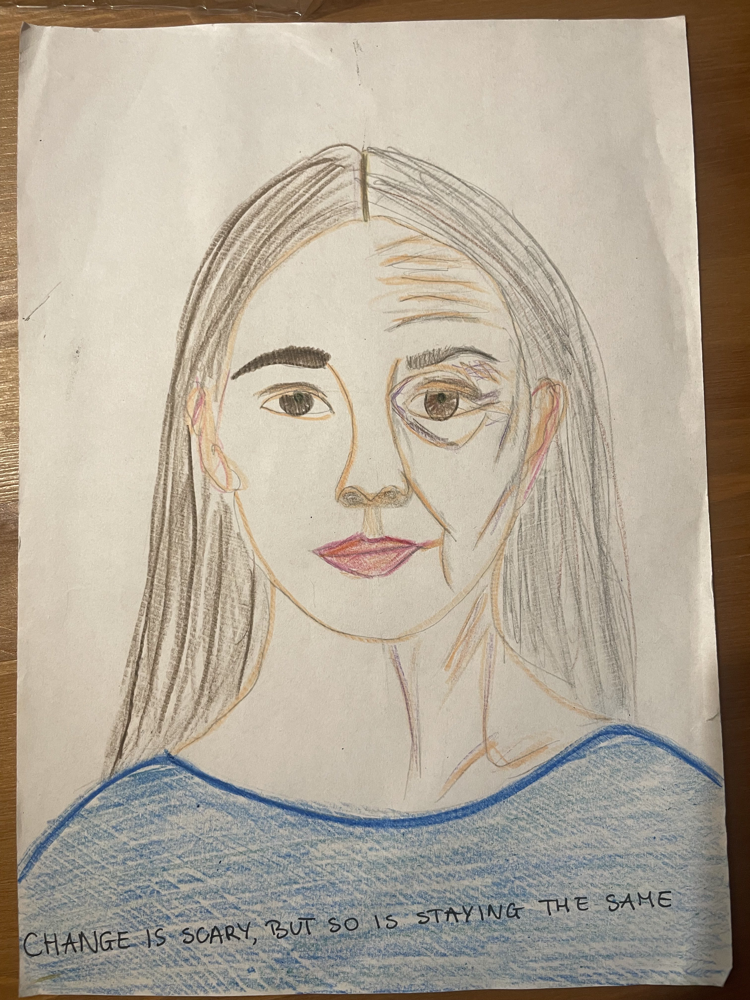

Project 2
Ania, Katarina, Felix, Jonathan
Phase 1 - Ania
Phase 2 - Katarina
Change is scary
When I was young, not even ten
I’d often have a cry
When thinking of the years ahead
And how soon they would fly
So momma dear would hold me close
And whisper in my ear
Her calming words in sweet embrace
That dried my every tear
Change is scary
But worse is staying the same
Change is scary
But darling love remains
So when I hit those yearly spurts
Of growth and changing joys
I’d wipe my nose as I packed up
and put away old toys
And with the old I’d hold the new
And thank the lord above
That I was here — yet again
With memories to love
Change is scary
But worse is staying the same
Change is scary
Please keep my love aflame
Then one day the time had come,
To move out from my home
My once worst fear had now came true
Yet I felt not alone
For all the possibilities
The hopes and dreams to come
Outside my childhood home so dear
And I found myself did hum
Change is scary
But worse is staying the same
Change is scary
But darling love will always remain